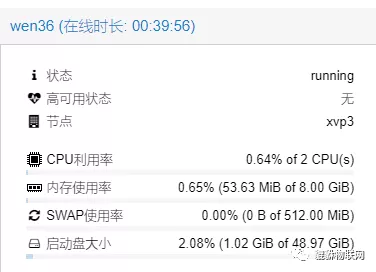
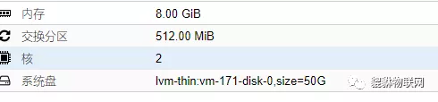
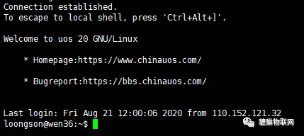
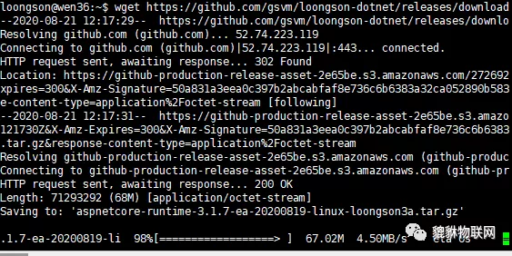
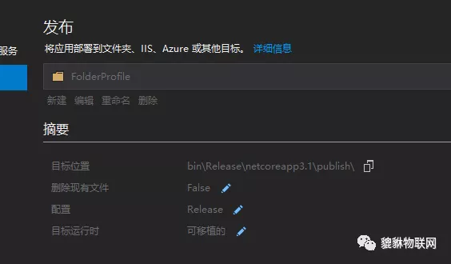
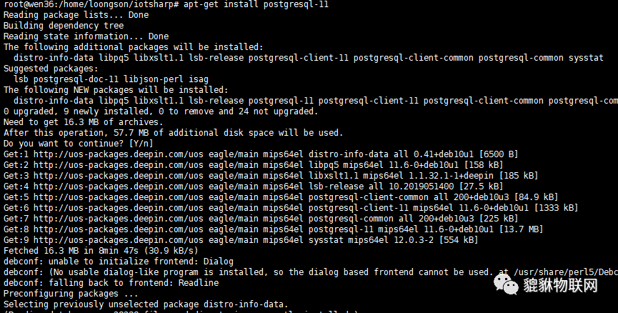
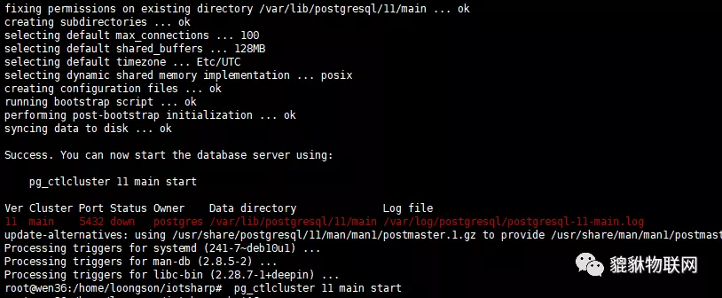
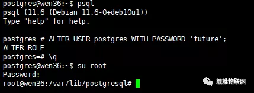
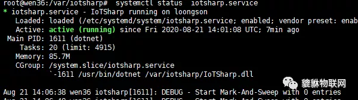

今天很开心的拿到了龙芯的测试服务器账号， 先上图show一下，

双核， 8G内存， 50G硬盘。

架构 mips64el

登录后， 显示为 uos 及其网址信息:

接下来， 二话不说， 我们开始下载龙芯版的.Net Core ， 龙芯版.Net Core 近期刚移植完成， 前期国内其他公众号和开源中国均有报道， 现在， 相关工具链已完成，完全已经达到了开箱即用， 并且已经是.Net Core 3.1.7 是最新版本，相关下载链接如下：
.NET Core 3.1.7 MIPS64 Port Early Access Build 20200819
https://github.com/gsvm/loongson-dotnet/releases
由于IoTSharp 是 基于asp.net core , 因此我们首先下载 它的 安装包， 后期如果尝试在龙芯上开发其他内容， 再尝试sdk。 下载链接如下:
github 的下载速度偶尔很快:


下载完成后， 开始解压， 因为 分配的账号并没有/usr/bin 的写权限， 因此， 我们解压在用户目录下，
tar -xzvf ./aspnetcore-runtime-3.1.7-ea-20200819-linux-loongson3a.tar.gz -C /dn/
cd dn 进入dn目录， 可以看到 相关内容， 下面我们为了方便， 将他加到环境变量， 命令行输入 vi .bashrc ， 在末尾 加入下面内容。
1 | export PATH="$PATH://home/loongson/dn/" |
现在， 可以直接在控制台输入 dotnet 方便操作。 当然， 这些都是因为权限问题， 无法修改系统文件导致的。 如果你有root权限， 完全不必这么做 放到/usr/bin 下面了事。
接下来， 我们发布一个IoTSharp 的版本， 发布配置如下:

记得， 一定要是 可移植的， 这样.net 就不会针对平台进行特殊处理！
下面， 开始安装postgresql .
写到这里， 突然想起 su root ， 然后输入了龙芯给的普通用户的密码， 居然成功切换， 好吧， 这下我们就很顺利了，
开始安装pgsql
1 | apt-get install postgresql-11 |
如图:

安装完成

按照说明， 我们输入了
1 | pg_ctlcluster 11 main start |
启动了数据库， 输入下面的命令切换数据库的系统用户
1 | su postgres |
执行 psql 修改数据库密码， 输入下面的脚本
1 | ALTER USER postgres WITH PASSWORD 'future'; |
如图所示


现在我们开始启动程序， 由于我们拥有了root权限!将.net core 移动到 /usr/bin 中， 将IoTSharp 发布的内容上传到 /var/iotsharp
接下来， 让我们创建 系统服务， 在当前木目录先创建文件使用命令vi iotsharp.service 编辑内容如下:
1 |

1 | [Unit] |
复制服务文件:
1 | cp iotsharp.service /etc/systemd/system/iotsharp.service |
启用服务
1 | systemctl enable /etc/systemd/system/iotsharp.service |
创建用户
1 | useradd iotsharp |
启动服务
1 | systemctl start iotsharp.service |

由于当前版本默认启动了CapServer 和 ModBus 服务， 由于ModBus的默认502端口在linux下 低于1024 端口， 普通用户使用时有权限问题， 因此 需要加入配置项修改一下appsettings.Production.json ， 在尾部加入下面内容， 会将默认的ModBus 端口改为 5020
1 | "ModBusServer"``: { <br> ``"Port"``: 5020,<br> ``"TimeOut"``: 120000 <br>} |
1 |
使用命令systemctl status iotsharp.service 查看IoTSharp 项目状态， 截图如下:

至此， 我们搭建完成， 期间务必注意的是 pgsql一定要启动， 一点iotsharp 自动启动， 则通过服务方式重启或者ctl+c 的方式结束似乎都不能实现， 系统重启才行。
我们的的服务地址是 http://114.242.206.180:23927/ 2020年9月20号之前有效。 另外， 可以加入 我们的QQ群 63631741 进一步了解。或者关注公众号
IoTSharp 项目地址